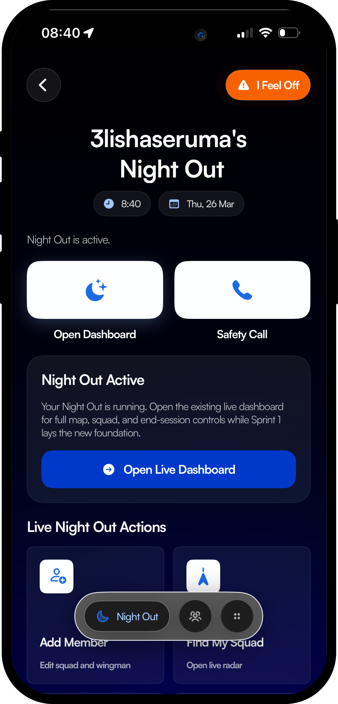

Scroll down to see how Obserc creates a live safety net around you, keeping you connected to your circle before anything even happens.
When the music's loud and plans change fast, Night Out Mode keeps everyone aligned, visible, and protected without killing the vibe. It’s the ultimate digital wingman.

Activate a live radar to find exactly where your friends are in real-time. Never lose your group in a crowded club, bar, or festival again.
Not feeling great about a situation? Tap "I Feel Off" to silently alert your active circle that you might need intervention or help soon.
Get out of an awkward or unsafe conversation. One tap triggers a fake phone call to your device, or instantly dials your designated wingman.
Wake up to a secure, private summary of your night. See the timeline of where you went, when you left, and who was with you.
Ready to get started?
Get Obserc on the App Store. Experience all these features to keep your inner circle safe.